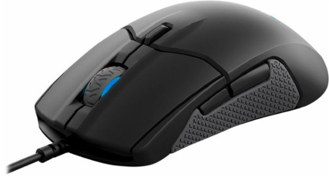

SteelSeries Sensei 310
Описание товара
Sensei 310 по праву считается одной из самых популярных игровых мышек, когда-либо выпускавшихся на профильный рынок. Последнее обновление модели показало, что производитель еще может удивить чем-то новым и необычным, даже если речь идет об устройстве, знакомом пользователям на протяжении последнего десятилетия
Фирменное ПО
ПО SteelSeries Engine открывает невероятный арсенал возможностей и доступ к приложениям для изменения режимов RGB-подсветки. Специальное приложение для Discord и GameSense позволяет выводить уведомления чата на любые устройства SteelSeries.

Характеристики товара
- Модель сенсора: TrueMove 3 (Pixart PMW3360)
- Количество кнопок: 8 кнопок + прокрутка
- Материал поверхности корпуса: пластмасса, силикон
- Гарантированный ресурс 50 млн нажатий
- Подсветка: RGB
- 16 млн цветов
Подробное описание товара
Мышь располагается в руке как влитая. Удобная форма и наличие силиконовых боковых вставок этому полностью способствуют. Под основными клавишами спрятаны переключатели Omron, ресурс которых составляет порядка 50 миллионов нажатий. Их качество не вызывает никаких сомнений, а вот тактильные ощущения – вполне. Ход кажется немного более длинным, чем следовало бы. Есть определенные проблемы и с четкостью срабатывания. В общем, эта механика явно на любителя.
Как и многие другие продукты данного бренда, эта мышь совместима с фирменной программной утилитой SteelSeries Engine 3. Интерфейс ПО прост, к тому же, знаком пользователям другими устройствами производителя. С помощью данного приложения, можно настраивать подсветку (с возможностью ее синхронизации между разными устройствами SteelSeries), регулировать скорость работы сенсора, частоту отклика и опроса. Благодаря ПО, каждый игрок может назначать макросы, а также изменять назначение каждой клавиши, так как все они являются программируемыми
Эргономика и тестирование
Оптический сенсор TrueMove 3 является совместной разработкой компаний SteelSeries и Pixart на базе отличного датчика PMW 3360. Его основное отличие от аналогов состоит в том, что производитель гарантирует абсолютно точную работу сенсора 1:1 на разрешениях от 100 до 3500 cpi. Это означает, что на каждый единичный просчет при движении мыши приходится движение курсора на один пиксель экрана в соответствующую сторону. Со старыми лазерными Avago 9500 в прошлых моделях Sensei и их дикой непредсказуемой акселерацией о таком можно было лишь мечтать. Кроме того, данные параметры точности выдерживаются на очень высоких скоростях перемещения манипулятора. Никаких паразитных моментов в работе устройства не наблюдается. Вызвать срыв курсора невозможно, акселерацию или угловую привязку можно задействовать при желании. Высота отрыва не регулируется и постоянно выставлена в минимально доступный 1 мм (+/– 0,2 мм). Программные тесты указывают на наличие небольшого уровня сглаживания, в пределах 11–12%, которое остается стабильным на всем отрезке разрешений от 400 до 12 000 cpi.